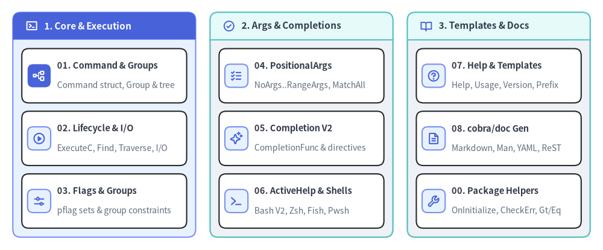
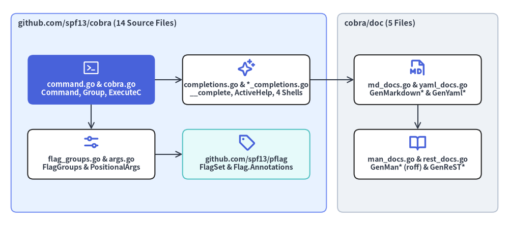

Cobra API Reference Overview
This catalog provides a complete, symbol-by-symbol reference for github.com/spf13/cobra v1.10.2 and its github.com/spf13/cobra/doc subpackage. Across 19 non-test Go source files, Cobra exposes 17 exported types and 176 exported symbols (structs, function types, methods, constants, global toggles, and documentation generators).

Source Code
from drawlib.canvas import save, setup
from drawlib.icons import phosphor
from drawlib.smartarts import CardList, Panel
from drawlib.styles import Colors, Styles
setup(width=188, height=78)
_ = Colors
col_specs = [
(
4.0,
"1. Core & Execution",
Styles.PrimaryNeutral,
Styles.PrimaryFlat,
Styles.WhiteBold.patch(text_size=11.0),
phosphor.terminal_window,
Styles.WhiteBold,
[
("01. Command & Groups", "Command struct, Group & tree", phosphor.tree_structure, True),
("02. Lifecycle & I/O", "ExecuteC, Find, Traverse, I/O", phosphor.play_circle, False),
("03. Flags & Groups", "pflag sets & group constraints", phosphor.sliders_horizontal, False),
],
),
(
65.5,
"2. Args & Completions",
Styles.Neutral,
Styles.SecondaryNeutral,
Styles.DarkBold.patch(text_size=11.0),
phosphor.check_circle,
Styles.PrimaryBold,
[
("04. PositionalArgs", "NoArgs..RangeArgs, MatchAll", phosphor.list_checks, False),
("05. Completion V2", "CompletionFunc & directives", phosphor.sparkle, False),
("06. ActiveHelp & Shells", "Bash V2, Zsh, Fish, Pwsh", phosphor.terminal, False),
],
),
(
127.0,
"3. Templates & Docs",
Styles.Neutral,
Styles.SecondaryNeutral,
Styles.DarkBold.patch(text_size=11.0),
phosphor.book_open,
Styles.PrimaryBold,
[
("07. Help & Templates", "Help, Usage, Version, Prefix", phosphor.question, False),
("08. cobra/doc Gen", "Markdown, Man, YAML, ReST", phosphor.file_text, False),
("00. Package Helpers", "OnInitialize, CheckErr, Gt/Eq", phosphor.wrench, False),
],
),
]
for x0, title, body_style, hdr_style, hdr_text_style, hdr_icon, hdr_icon_style, items in col_specs:
panel = Panel(
title,
"",
style=body_style,
header_style=hdr_style,
text_style=hdr_text_style,
icon=hdr_icon,
icon_style=hdr_icon_style,
header_variant="filled",
header_height=8.5,
)
panel.draw((x0, 4.0), width=57.0, height=70.0, align="bottom_left")
inner_xy, inner_w, inner_h = panel.get_content_box(
(x0, 4.0),
width=57.0,
height=70.0,
padding=(2.8, 2.8),
align="bottom_left",
)
cards = CardList(
style=Styles.White,
text_style=Styles.DarkBold.patch(text_size=10.5),
description_style=Styles.Muted.patch(text_size=10.0),
badge_shape="rounded_rect",
badge_style=Styles.PrimaryNeutral,
icon_style=Styles.PrimaryBold,
direction="vertical",
spacing=2.6,
)
for mod_name, mod_desc, mod_icon, is_focal in items:
if is_focal:
cards.add(
mod_name,
mod_desc,
icon=mod_icon,
badge_style=Styles.PrimaryFlat,
icon_style=Styles.WhiteBold,
)
else:
cards.add(mod_name, mod_desc, icon=mod_icon)
cards.draw(inner_xy, width=inner_w, height=inner_h, align="bottom_left")
save()
packagegithub.com/spf13/cobra#
Cobra is divided into two Go packages within a single module (github.com/spf13/cobra):
github.com/spf13/cobra(Root Package —14source files): DefinesCommand,Group,PositionalArgs,CompletionOptions,ShellCompDirective, relational flag group validators, dynamic Shell Completion V2 (__complete), ActiveHelp, and shell script generators for Bash, Zsh, Fish, and PowerShell.github.com/spf13/cobra/doc(Documentation Subpackage —5source files): Generates static CLI reference documentation in Markdown, Unix man pages (roff), YAML, and reStructuredText (ReST) directly from acobra.Commandtree without parsing Go ASTs.
Exported API Statistics (v1.10.2)#
| Metric | Root Package (cobra) |
Subpackage (cobra/doc) |
Total (v1.10.2) |
|---|---|---|---|
| Non-Test Source Files | 14 (command.go, completions.go, cobra.go, ...) |
5 (man_docs.go, md_docs.go, rest_docs.go, yaml_docs.go, util.go) |
19 files |
| Exported Types & Aliases | 7 (Command, Group, FParseErrWhitelist, PositionalArgs, ShellCompDirective, CompletionOptions, Completion, CompletionFunc) |
2 (GenManHeader, GenManTreeOptions) + internal YAML schema structs |
17 type definitions |
Exported Methods on *Command |
108 methods (tree, lifecycle, flags, args, completion, templates) |
0 (operates via package functions accepting *cobra.Command) |
109 methods (incl. CompletionOptions.SetDefaultShellCompDirective) |
| Exported Functions, Vars & Consts | 41 (OnInitialize, MatchAll, FixedCompletions, ShellCompDirective*, Enable*) |
14 (GenMarkdown*, GenMan*, GenYaml*, GenReST*) |
176 exported symbols |
Catalog Chapter Navigation#
| Chapter | Source Files Covered | Primary Exported Symbols |
|---|---|---|
| 00. API Overview | cobra.go, command.go, bash_completions.go, completions.go |
Package map, Enable* global vars, annotation constants, OnInitialize, OnFinalize, AddTemplateFunc, CheckErr, WriteStringAndCheck, Gt, Eq |
| 01. Command Struct & Groups | command.go |
Command (35 exported fields), Group, FParseErrWhitelist, AddCommand, RemoveCommand, Commands, Parent, Root, AddGroup, Groups, ContainsGroup, UseLine, CommandPath |
| 02. Lifecycle, Execution & I/O | command.go, cobra.go |
Execute, ExecuteC, ExecuteContext, ExecuteContextC, Context, SetContext, Find, Traverse, ArgsLenAtDash, SetArgs, SetOut, SetErr, SetIn, OutOrStdout, ErrOrStderr, Print*, SetErrPrefix |
| 03. Flags & Flag Groups | command.go, flag_groups.go, shell_completions.go, bash_completions.go |
Flags, PersistentFlags, LocalFlags, InheritedFlags, ParseFlags, Flag, MarkFlagsRequiredTogether, MarkFlagsOneRequired, MarkFlagsMutuallyExclusive, ValidateFlagGroups, MarkFlagRequired, MarkFlagFilename, MarkFlagDirname |
| 04. Positional Args | args.go, command.go |
PositionalArgs, ValidateArgs, NoArgs, OnlyValidArgs, ArbitraryArgs, MinimumNArgs, MaximumNArgs, ExactArgs, ExactValidArgs, RangeArgs, MatchAll, legacyArgs |
| 05. Completions & Directives | completions.go |
Completion, CompletionFunc, ShellCompDirective (Default, Error, NoSpace, NoFileComp, FilterFileExt, FilterDirs, KeepOrder), CompletionOptions, CompletionWithDesc, FixedCompletions, NoFileCompletions, RegisterFlagCompletionFunc, CompDebug* |
| 06. ActiveHelp & Shell Generators | active_help.go, bash_completions*.go, zsh_completions.go, fish_completions.go, powershell_completions.go |
AppendActiveHelp, GetActiveHelpConfig, InitDefaultCompletionCmd, GenBashCompletionV2, GenZshCompletion*, GenFishCompletion*, GenPowerShellCompletion* |
| 07. Help, Usage & Templates | command.go, cobra.go |
Help, HelpFunc, SetHelpFunc, SetHelpCommand, SetHelpTemplate, Usage, UsageFunc, UsageString, SetUsageFunc, SetUsageTemplate, SetVersionTemplate, SuggestionsFor |
08. Documentation Generation (cobra/doc) |
doc/md_docs.go, doc/man_docs.go, doc/yaml_docs.go, doc/rest_docs.go |
GenMarkdown, GenMarkdownTree*, GenMan, GenManTree*, GenManHeader, GenManTreeOptions, GenYaml, GenYamlTree*, GenReST, GenReSTTree* |

Source Code
from drawlib.canvas import save, setup
from drawlib.diagrams.architecture import ArchitectureDiagram, Node, NodeGroup, PhosphorIcon
from drawlib.styles import Colors, Styles
setup(width=184, height=82)
_ = Colors
d = ArchitectureDiagram(
node_style=Styles.PrimaryBold,
node_text_style=Styles.DarkBold.patch(text_size=10.2),
edge_style=Styles.DarkBold.patch(line_width=1.5),
edge_text_style=Styles.Dark.patch(text_size=10.0),
node_card_style=Styles.White,
)
root_grp = d.add(
NodeGroup(
"github.com/spf13/cobra (14 Source Files)",
width=114,
height=72,
style=Styles.PrimaryNeutral.patch(shape_r=2.0),
text_style=Styles.DarkBold.patch(text_size=11.0, halign="left", valign="top"),
),
xy=(4.0, 5.0),
)
cmd_node = root_grp.add(
Node(
"command.go & cobra.go\nCommand, Group, ExecuteC",
icon=PhosphorIcon.TERMINAL_WINDOW,
icon_size=6.5,
width=46,
height=18,
style=Styles.White,
text_style=Styles.WhiteBold.patch(text_size=10.5),
card_style=Styles.PrimaryFlat.patch(shape_r=2.0),
),
xy=(29.0, 48.0),
)
flags_node = root_grp.add(
Node(
"flag_groups.go & args.go\nFlagGroups & PositionalArgs",
icon=PhosphorIcon.SLIDERS_HORIZONTAL,
icon_size=6.5,
width=46,
height=18,
card_style=Styles.White.patch(shape_r=2.0),
),
xy=(29.0, 21.0),
)
comp_node = root_grp.add(
Node(
"completions.go & *_completions.go\n__complete, ActiveHelp, 4 Shells",
icon=PhosphorIcon.SPARKLE,
icon_size=6.5,
width=46,
height=18,
card_style=Styles.White.patch(shape_r=2.0),
),
xy=(85.0, 48.0),
)
pflag_node = root_grp.add(
Node(
"github.com/spf13/pflag\nFlagSet & Flag.Annotations",
icon=PhosphorIcon.TAG,
icon_size=6.5,
width=46,
height=18,
card_style=Styles.SecondaryNeutral.patch(shape_r=2.0),
),
xy=(85.0, 21.0),
)
doc_grp = d.add(
NodeGroup(
"cobra/doc (5 Files)",
width=58,
height=72,
style=Styles.Neutral.patch(shape_r=2.0),
text_style=Styles.DarkBold.patch(text_size=11.0, halign="left", valign="top"),
),
xy=(122.0, 5.0),
)
md_node = doc_grp.add(
Node(
"md_docs.go & yaml_docs.go\nGenMarkdown* & GenYaml*",
icon=PhosphorIcon.FILE_MD,
icon_size=6.5,
width=46,
height=18,
card_style=Styles.White.patch(shape_r=2.0),
),
xy=(29.0, 48.0),
)
man_node = doc_grp.add(
Node(
"man_docs.go & rest_docs.go\nGenMan* (roff) & GenReST*",
icon=PhosphorIcon.BOOK_OPEN,
icon_size=6.5,
width=46,
height=18,
card_style=Styles.White.patch(shape_r=2.0),
),
xy=(29.0, 21.0),
)
d.connect(cmd_node, flags_node)
d.connect(cmd_node, comp_node)
d.connect(flags_node, pflag_node)
d.connect(comp_node, md_node)
d.connect(md_node, man_node)
d.draw((0.0, 0.0))
save()
var Package-Level Configuration Variables (cobra.go)#
Cobra exposes six package-level variables in cobra.go (and command_win.go) that configure global command resolution, sorting, hook inheritance, and Windows Explorer splash behavior.
var (
EnablePrefixMatching = false
EnableCommandSorting = true
EnableCaseInsensitive = false
EnableTraverseRunHooks = false
MousetrapHelpText = "This is a command line tool.\n\nYou need to open cmd.exe and run it from there.\n"
MousetrapDisplayDuration = 5 * time.Second
)
| Variable | Type | Default | Description |
|---|---|---|---|
cobra.EnablePrefixMatching |
bool |
false |
When true, allows unambiguous command/alias prefixes (e.g., app dep matching app deploy) during findNext(). Disabled by default because adding new subcommands can silently break scripts relying on short prefixes. |
cobra.EnableCommandSorting |
bool |
true |
Controls whether cmd.Commands() lexicographically sorts child commands by Name(). Set to false to preserve the exact registration order passed to AddCommand(). |
cobra.EnableCaseInsensitive |
bool |
false |
When true, command names and aliases are matched case-insensitively (strings.EqualFold) during command resolution and completion. |
cobra.EnableTraverseRunHooks |
bool |
false |
When false (default), Cobra executes only the closest ancestor's PersistentPreRun[E] and PersistentPostRun[E]. When true, Cobra executes all ancestor PersistentPreRun[E] hooks top-down (root -> leaf) and all PersistentPostRun[E] hooks bottom-up (leaf -> root). |
cobra.MousetrapHelpText |
string |
"This is a command line tool..." |
Windows-only splash message displayed if the binary is double-clicked from explorer.exe. Set to "" to disable the mousetrap check (command_win.go). |
cobra.MousetrapDisplayDuration |
time.Duration |
5 * time.Second |
Duration to display MousetrapHelpText on Windows before closing, or 0 to wait until the Enter key is pressed. |
constExported Annotation & Completion Constants#
Cobra stores metadata on pflag.Flag.Annotations (map[string][]string) and Command.Annotations (map[string]string) using exported constant keys:
const (
// command.go
FlagSetByCobraAnnotation = "cobra_annotation_flag_set_by_cobra"
CommandDisplayNameAnnotation = "cobra_annotation_command_display_name"
// bash_completions.go
BashCompFilenameExt = "cobra_annotation_bash_completion_filename_extensions"
BashCompCustom = "cobra_annotation_bash_completion_custom"
BashCompOneRequiredFlag = "cobra_annotation_bash_completion_one_required_flag"
BashCompSubdirsInDir = "cobra_annotation_bash_completion_subdirs_in_dir"
// completions.go
ShellCompRequestCmd = "__complete"
ShellCompNoDescRequestCmd = "__completeNoDesc"
)
| Constant | Value | Target | Description |
|---|---|---|---|
FlagSetByCobraAnnotation |
"cobra_annotation_flag_set_by_cobra" |
pflag.Flag.Annotations |
Marks flags automatically injected by Cobra (--help and --version). |
CommandDisplayNameAnnotation |
"cobra_annotation_command_display_name" |
Command.Annotations |
Overrides cmd.DisplayName() in usage lines and help output without changing cmd.Name() routing (useful for plugin subcommands such as kubectl-foo displayed as kubectl foo). |
BashCompFilenameExt |
"cobra_annotation_bash_completion_filename_extensions" |
pflag.Flag.Annotations |
Set by MarkFlagFilename(); restricts shell file completion to matching extensions (ShellCompDirectiveFilterFileExt). |
BashCompCustom |
"cobra_annotation_bash_completion_custom" |
pflag.Flag.Annotations |
Set by MarkFlagCustom(); attaches a legacy Bash completion function name to a flag. |
BashCompOneRequiredFlag |
"cobra_annotation_bash_completion_one_required_flag" |
pflag.Flag.Annotations |
Set by MarkFlagRequired() / MarkPersistentFlagRequired(); checked by ValidateRequiredFlags() during execute(). |
BashCompSubdirsInDir |
"cobra_annotation_bash_completion_subdirs_in_dir" |
pflag.Flag.Annotations |
Set by MarkFlagDirname(); restricts shell completion to directories (ShellCompDirectiveFilterDirs). |
ShellCompRequestCmd |
"__complete" |
Hidden subcommand | Hidden internal command invoked by shell scripts to request dynamic completions with descriptions. |
ShellCompNoDescRequestCmd |
"__completeNoDesc" |
Hidden alias | Hidden alias of __complete requesting completions without \t descriptions. |
funccobra.OnInitialize(y ...func())#
Registers one or more global callback functions that Cobra executes during cmd.preRun() immediately before ValidateArgs() and the *Run hook chain on every Execute() invocation. Commonly used to bind viper configuration files after command-line flags have been parsed.
func OnInitialize(y ...func())
Parameters#
| Parameter | Type | Description |
|---|---|---|
y |
...func() |
Variadic list of zero-argument initializer callbacks appended to the package-level initializers slice. |
funccobra.OnFinalize(y ...func())#
Registers one or more global cleanup callbacks executed via defer c.postRun() when the target command's execute() method exits (whether Run/RunE succeeds or returns an error).
func OnFinalize(y ...func())
Parameters#
| Parameter | Type | Description |
|---|---|---|
y |
...func() |
Variadic list of zero-argument finalizer callbacks appended to the package-level finalizers slice. |
Example (OnInitialize & OnFinalize)#
package main
import (
"fmt"
"github.com/spf13/cobra"
)
func init() {
cobra.OnInitialize(func() {
// Runs after ParseFlags(), before PersistentPreRunE / RunE
fmt.Println("initializing runtime configuration...")
})
cobra.OnFinalize(func() {
// Deferred cleanup after PostRunE / PersistentPostRunE
fmt.Println("flushing telemetry buffers...")
})
}
funccobra.AddTemplateFunc & cobra.AddTemplateFuncs#
Registers custom Go text/template functions into Cobra's global templateFuncs map so they can be called inside custom Help, Usage, and Version templates (SetHelpTemplate, SetUsageTemplate, SetVersionTemplate).
func AddTemplateFunc(name string, tmplFunc interface{})
func AddTemplateFuncs(tmplFuncs template.FuncMap)
Built-in Template Functions (cobra.go)#
| Template Function | Go Backing Function | Description |
|---|---|---|
trim |
strings.TrimSpace |
Trims leading and trailing Unicode whitespace. |
trimRightSpace / trimTrailingWhitespaces |
trimRightSpace |
Trims trailing Unicode whitespace (strings.TrimRightFunc(s, unicode.IsSpace)). |
appendIfNotPresent |
appendIfNotPresent |
Appends stringToAppend to s separated by a space if not already a substring. |
rpad |
rpad(s string, padding int) |
Right-pads s with spaces to padding width (fmt.Sprintf("%%-%ds", padding)). |
gt |
cobra.Gt |
Compares lengths of arrays/slices/maps/chans, or integer values of int* / numeric string. |
eq |
cobra.Eq |
Checks equality of int* or string values. |
funccobra.CheckErr & cobra.WriteStringAndCheck#
Convenience error-handling helpers for CLI entrypoints and completion/documentation buffer writers.
func CheckErr(msg interface{})
func WriteStringAndCheck(b io.StringWriter, s string)
| Function | Signature | Behavior |
|---|---|---|
CheckErr |
func CheckErr(msg interface{}) |
If msg != nil, prints "Error: <msg>" to os.Stderr (fmt.Fprintln(os.Stderr, "Error:", msg)) and terminates the process with os.Exit(1). Does nothing when msg == nil. |
WriteStringAndCheck |
func WriteStringAndCheck(b io.StringWriter, s string) |
Calls _, err := b.WriteString(s) and passes err to CheckErr(err). Used throughout Cobra's shell completion and cobra/doc generators. |
funccobra.Gt & cobra.Eq#
Legacy reflection-based comparison functions exposed for text/template compatibility (gt and eq template helpers).
func Gt(a interface{}, b interface{}) bool
func Eq(a interface{}, b interface{}) bool
[!WARNING] Legacy Compatibility Helpers (
cobra.Gt/cobra.Eq): Both functions carry aFIXMEcomment incobra.gonoting that they exist only for backwards compatibility with older Go templates and are slated for removal in Cobra v2.Eqpanics (panic("Eq called on unsupported type")) if called on anArray,Chan,Map, orSlice. Prefer Go's standard librarygtandeqtemplate builtins in new code.